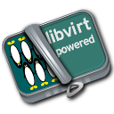
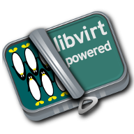

This page provides an illustration of the wide variety of applications using the libvirt management API.
Contents
To add an application not listed on this page, send a message to the mailing list, requesting it be added here, or simply send a patch against the documentation in the libvirt.git docs subdirectory. If your application uses libvirt as its API, the following graphics are available for your website to advertise support for libvirt:
 
Guestfish is an interactive shell and command-line tool for examining and modifying virtual machine filesystems. It uses libvirt to find guests and their associated disks.
An interactive shell, and batch scriptable tool for performing management tasks on all libvirt managed domains, networks and storage. This is part of the libvirt core distribution.
Allows the disk image(s) and configuration for an existing virtual machine to be cloned to form a new virtual machine. It automates copying of data across to new disk images, and updates the UUID, MAC address, and name in the configuration.
Examine the utilization of each filesystem in a virtual machine from the comfort of the host machine. This tool peeks into the guest disks and determines how much space is used. It can cope with common Linux filesystems and LVM volumes.
Provides a way to deploy virtual appliances. It defines a simplified portable XML format describing the pre-requisites of a virtual machine. At time of deployment this is translated into the domain XML format for execution under any libvirt hypervisor meeting the pre-requisites.
Provides a way to provision new virtual machines from a OS distribution install tree. It supports provisioning from local CD images, and the network over NFS, HTTP and FTP.
Watch the CPU, memory, network and disk utilization of all virtual machines running on a host.
virt-what is a shell script for detecting if the program is running in a virtual machine. It prints out a list of facts about the virtual machine, derived from heuristics.
SystemTap is a tool used to gather rich information about a running system through the use of scripts. Starting from v2.4, the front-end application stap can use libvirt to gather data within virtual machines.
Vagrant-Libvirt is a Vagrant plugin that uses libvirt to manage virtual machines. It is a command line tool for developers that makes it very fast and easy to deploy and re-deploy an environment of vm's.
Virt-Lightning uses libvirt, cloud-init and libguestfs to allow anyone to quickly start a new VM. Very much like a container CLI, but with a virtual machine.
LCFG is a system for automatically installing and managing the configuration of large numbers of Unix systems. It is particularly suitable for sites with very diverse and rapidly changing configurations. The lcfg-libvirt package adds support for virtualized systems to LCFG, with both Xen and KVM known to work. Cloning guests is supported, as are the bridged, routed, and isolated modes for Virtual Networking.
BuildBot is a system to automate the compile/test cycle required by most software projects. CVS commits trigger new builds, run on a variety of client machines. Build status (pass/fail/etc) are displayed on a web page or through other protocols.
This plugin for Jenkins adds a way to control guest domains hosted on Xen or QEMU/KVM. You configure a Jenkins Agent, selecting the guest domain and hypervisor. When you need to build a job on a specific Agent, its guest domain is started, then the job is run. When the build process is finished, the guest domain is shut down, ready to be used again as required.
Convert a physical machine to run on KVM. It is a LiveCD which is booted on the machine to be converted. It collects a little information from the user, then copies the disks over to a remote machine and defines the XML for a domain to run the guest. (Note this tool is included with libguestfs)
virt-v2v converts guests from a foreign hypervisor to run on KVM, managed by libvirt. It can convert guests from VMware or Xen to run on OpenStack, oVirt (RHEV-M), or local libvirt. It will enable VirtIO drivers in the converted guest if possible. (Note this tool is included with libguestfs) For RHEL customers of Red Hat, conversion of Windows guests is also possible. This conversion requires some Microsoft signed pieces, that Red Hat can provide.
Part of the virt-goodies package, vmware2libvirt is a python script for migrating a vmware image to libvirt.
A general purpose desktop management tool, able to manage virtual machines across both local and remotely accessed hypervisors. It is targeted at home and small office usage up to managing 10-20 hosts and their VMs.
A lightweight tool for accessing the graphical console associated with a virtual machine. It can securely connect to remote consoles supporting the VNC protocol. Also provides an optional mozilla browser plugin.
The Qt GUI for create and control VMs and another virtual entities (aka networks, storages, interfaces, secrets, network filters). Contains integrated LXC/SPICE/VNC viewer for accessing the graphical or text console associated with a virtual machine or container.
The Qt VNC/SPICE viewer for access to remote desktops or VMs.
A GNOME application to access virtual machines.
Eucalyptus is an on-premise Infrastructure as a Service cloud software platform that is open source and AWS-compatible. Eucalyptus uses libvirt virtualization API to directly interact with Xen and KVM hypervisors.
Nimbus is an open-source toolkit focused on providing Infrastructure-as-a-Service (IaaS) capabilities to the scientific community. It uses libvirt for communication with all KVM and Xen virtual machines.
OpenStack is a "cloud operating system" usable for both public and private clouds. Its various parts take care of compute, storage and networking resources and interface with the user using a dashboard. Compute part uses libvirt to manage VM life-cycle, monitoring and so on.
KubeVirt is a virtual machine management add-on for Kubernetes. The aim is to provide a common ground for virtualization solutions on top of Kubernetes.
A cloud software with no masters or central points. Nodes autodetect other nodes and autodistribute virtual machines and autodivide up the workload. Also there is no minimum limit for hosts, well, one might be nice. It's perfect for setting up low-end servers in a cloud or a cloud where you want the most bang for the bucks.
ZStack is an open source IaaS software that aims to automate the management of all resources (compute, storage, networking, etc.) in a datacenter by using APIs, thus conforming to the principles of a software-defined datacenter. The key strengths of ZStack in terms of management are scalability, performance, and a fast, user-friendly deployment.
A library and set of tools for accessing and modifying virtual machine disk images. It can be linked with C and C++ management programs, and has bindings for Perl, Python, Ruby, Java, OCaml, PHP, Haskell, and C#. Using its FUSE module, you can also mount guest filesystems on the host, and there is a subproject to allow merging changes into the Windows Registry in Windows guests.
A library and command line tools for simplifying the creation of application sandboxes using virtualization technology. It currently supports either KVM, QEMU or LXC as backends. Integration with systemd facilitates sandboxing of system services like apache.
Allows using simple ruby objects to manipulate hypervisors, guests, storage, network etc. It is based on top of the native ruby bindings.
An older tool for converting a physical machine into a virtual machine. It is a LiveCD which is booted on the machine to be converted. It collects a little information from the user, then copies the disks over to a remote machine and defines the XML for a domain to run the guest.
The libvirt-plugin is part of collectd and gathers statistics about virtualized guests on a system. This way, you can collect CPU, network interface and block device usage for each guest without installing collectd on the guest systems. For a full description, please refer to the libvirt section in the collectd.conf(5) manual page.
Host sFlow is a lightweight agent running on KVM hypervisors that links to libvirt library and exports standardized cpu, memory, network and disk metrics for all virtual machines.
The plugins provided by Guido Günther allow to monitor various things like network and block I/O with Munin.
Nagios-virt is a configuration tool to add monitoring of your virtualised domains to Nagios. You can use this tool to either set up a new Nagios installation for your Xen or QEMU/KVM guests, or to integrate with your existing Nagios installation.
The PCP libvirt PMDA (plugin) is part of the PCP toolkit and provides hypervisor and guest information and complete set of guest performance metrics. It supports pCPU, vCPU, memory, block device, network interface, and performance event metrics for each virtual guest.
Foreman is an open source web based application aimed to be a Single Address For All Machines Life Cycle Management. Foreman:
Creates everything you need when adding a new machine to your network, its goal being automatically managing everything you would normally manage manually (DNS, DHCP, TFTP, Virtual Machines,CA, CMDB...)
Integrates with Puppet (and acts as web front end to it).
Takes care of provisioning until the point puppet is running, allowing Puppet to do what it does best.
Shows you Systems Inventory (based on Facter) and provides real time information about hosts status based on Puppet reports.
AbiCloud is an open source cloud platform manager which allows to easily deploy a private cloud in your datacenter. One of the key differences of AbiCloud is the web rich interface for managing the infrastructure. You can deploy a new service just dragging and dropping a VM.
Kimchi is an HTML5 based management tool for KVM. It is designed to make it as easy as possible to get started with KVM and create your first guest. Kimchi manages KVM guests through libvirt. The management interface is accessed over the web using a browser that supports HTML5.
oVirt provides the ability to manage large numbers of virtual machines across an entire data center of hosts. It integrates with FreeIPA for Kerberos authentication, and in the future, certificate management.
VMmanager is a software solution for virtualization management that can be used both for hosting virtual machines and building a cloud. VMmanager can manage not only one server, but a large cluster of hypervisors. It delivers a number of functions, such as live migration that allows for load balancing between cluster nodes, monitoring CPU, memory.
Mist.io is an open source project and a service that can assist you in managing your virtual machines on a unified way, providing a simple interface for all of your infrastructure (multiple public cloud providers, OpenStack based public/private clouds, Docker servers, bare metal servers and now KVM hypervisors).
Ravada is an open source tool for managing Virtual Desktop Infrastructure (VDI). It is very easy to install and use. Following the documentation, you'll be ready to deploy virtual machines in minutes. The only requirements for the users are a Web browser and a lightweight remote viewer.
Virtlyst is an open source web application built with C++11, Cutelyst and Qt. It features:
Low memory usage (around 5 MiB of RAM)
Look and feel easily customized with HTML templates that use the Django syntax
VNC/Spice console directly in the browser using websockets on the same HTTP port
Host and Domain statistics graphs (CPU, Memory, IO, Network)
Connect to multiple libvirtd instances (over local Unix domain socket, SSH, TCP and TLS)
Manage Storage Pools, Storage Volumes, Networks, Interfaces, and Secrets
Create and launch VMs
Configure VMs with easy panels or go pro and edit the VM's XML
Cockpit is a web-based graphical interface for servers. With cockpit-machines it can create and manage virtual machines via libvirt.
Cuckoo Sandbox is a malware analysis system. You can throw any suspicious file at it and in a matter of seconds Cuckoo will provide you back some detailed results outlining what such file did when executed inside an isolated environment. And libvirt is one of the backends that can be used for the isolated environment.